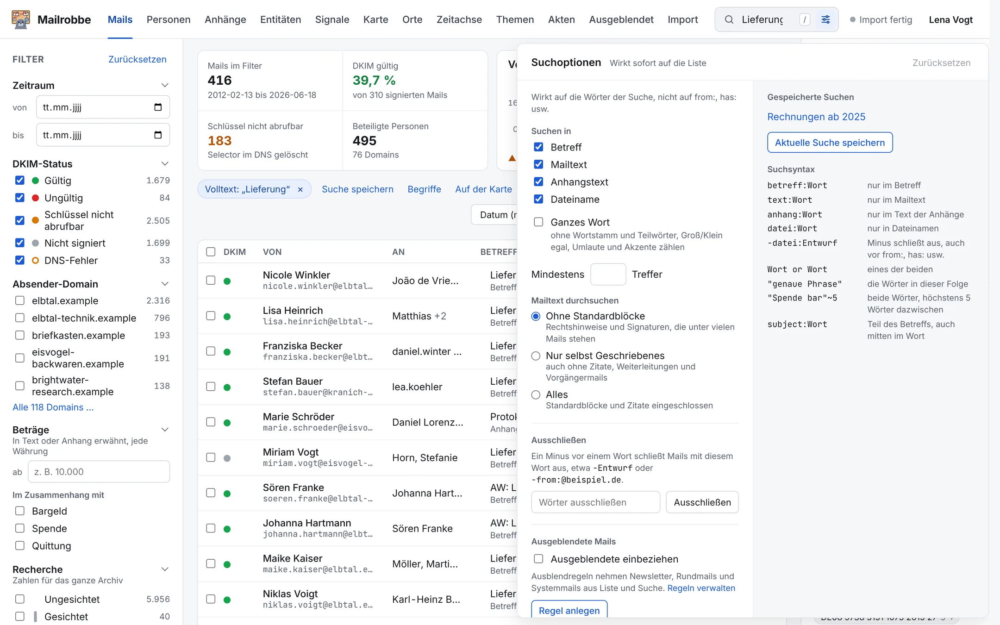

Suchen, auch in Anhängen
Ein Suchfeld für Mails, PDFs, Word-Dateien, Tabellen und den Inhalt von ZIP-Archiven. Gebeugte Formen findet die Suche mit, „Spenden“ also auch bei „Spende“. Das Suchmenü grenzt ein: nur im Betreff oder in Anhängen, nur das ganze Wort, zwei Wörter nah beieinander, nur was der Absender selbst geschrieben hat.
Suchfeld oben, Knopf mit den Schiebereglern

